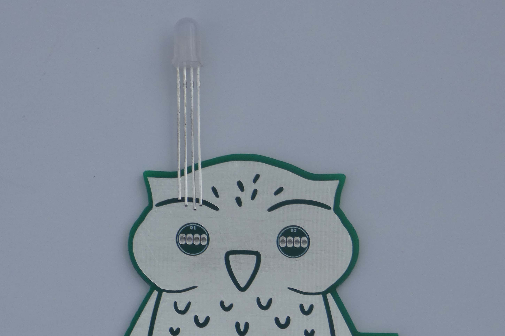
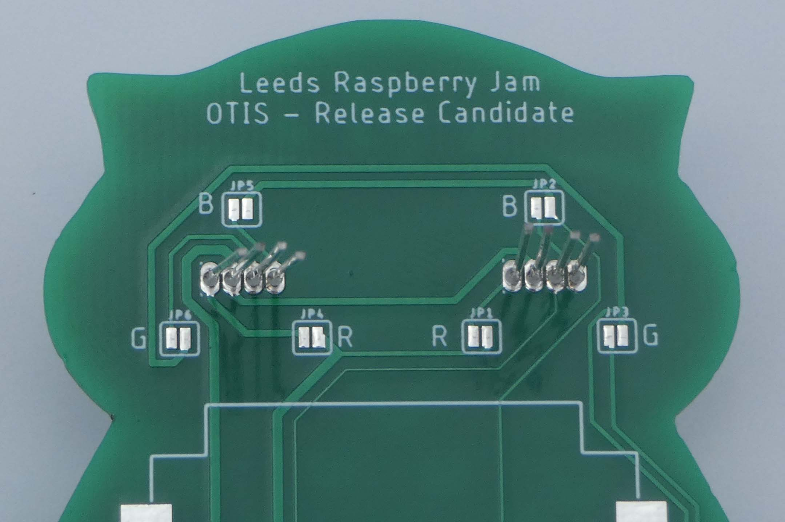

Step 2 - Soldering the LEDs¶
Insert the four LEDs into position, with their longest pin facing towards the switch.


Position of the LEDs - the longest pin should be on the right¶
Solder the LED pins in place, making sure the LEDs are flush with the board and there are no solder bridges between the pins, and then trim the leads using side cutters (scissors will do if you don’t have any).
If you are unsure, please refer to the video below:
Troubleshooting¶
The spacing between the pins on the LEDs is very small, be careful not to short two pads together.
If you do short two pads use solder wick or a desoldering pump to remove the solder and start over.
If the solder joints look crusty or have holes in them then you will need to rework them.